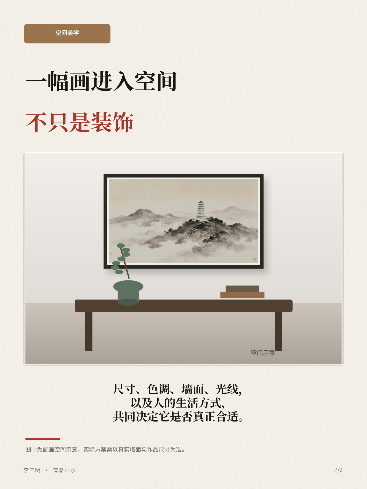

空间服务
东方空间配画
东方空间配画以东方美学为出发点，为茶室、办公室和会客厅搭配山水画，关注采光、墙面比例、家具尺度与装裱方式。
一幅画的尺寸、画框、墙面、采光与家具尺度，会共同决定它在空间里的声音。茶室需要留白与安静，办公室需要稳定但不压迫，会客厅需要能被远观，也经得起近看。
先看空间的光线与比例，再选择画面的气质、尺寸与装裱方式，用山水的节奏重新组织一面墙、一间屋子，以及人在其中停留的感受。

空间服务
东方空间配画以东方美学为出发点，为茶室、办公室和会客厅搭配山水画，关注采光、墙面比例、家具尺度与装裱方式。
一幅画的尺寸、画框、墙面、采光与家具尺度，会共同决定它在空间里的声音。茶室需要留白与安静，办公室需要稳定但不压迫，会客厅需要能被远观，也经得起近看。
先看空间的光线与比例，再选择画面的气质、尺寸与装裱方式，用山水的节奏重新组织一面墙、一间屋子，以及人在其中停留的感受。
